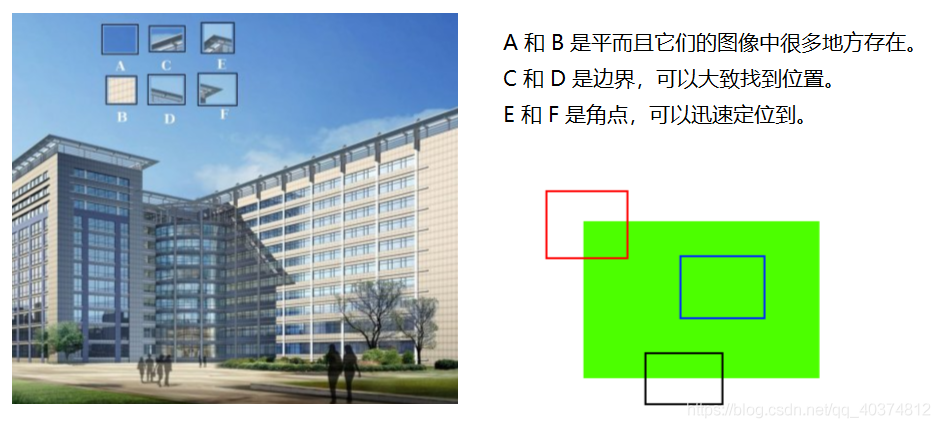
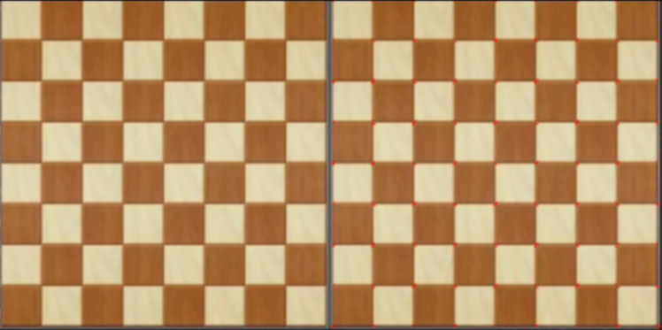

【基础】角点检测
1.角点检测算法基本思想
算法基本思想是使用一个固定窗口在图像上进行任意方向上的滑动，比较滑动前与滑动后两种情况，窗口中的像素灰度变化程度，如果存在任意方向上的滑动，都有着较大灰度变化，那么我们可以认为该窗口中存在角点。
例如

A和B处于平坦区域，没有什么确切的特征，它们所在的位置有很多种可能。
C和D要相对简单一些，它们是建筑物的边缘，我们可以找到一个大致的位置，但是要定位到精确的位置仍然很难。所以边缘是更好的特征，但还不够好。
E和F是建筑的一些角落，可以很容易地发现它们的位置，因为对于建筑物角落这个图像片段，我们不管朝哪个方向移动，这个片段看起来都会不一样。
2.OpenCV来实现Harris角点检测

参数：
src：输入单通道8位或浮点图像。
blockSize：它是考虑进行角点检测的邻域的大小
ksize：滑动核的大小。
k：角点响应值R计算公式中的α。 k: 取值参数[0.04,0.06] , 默认0.04即可
3.程序演示
import cv2
import numpy as np
img = cv2.imread('chessboard.jpg')
gray = cv2.cvtColor(img,cv2.COLOR_BGR2GRAY)
gray = np.float32(gray)
dst = cv2.cornerHarris(gray,2,3,0.04)
img[dst>0.01*dst.max()]=[0,0,255]
cv2.imshow('dst',img)
cv2.waitKey(0)
cv2.destroyAllWindows()
